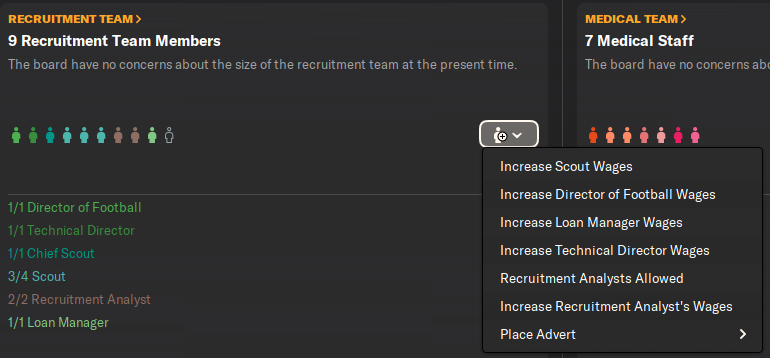
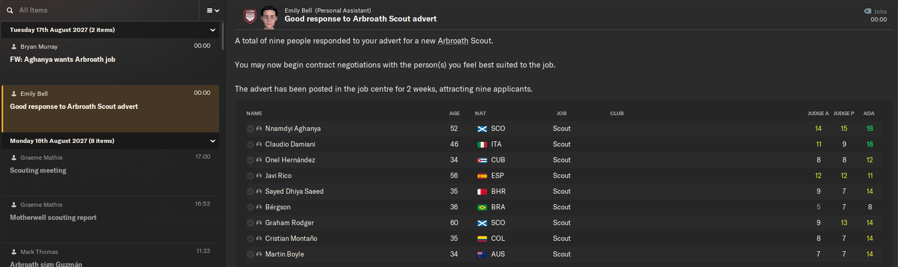
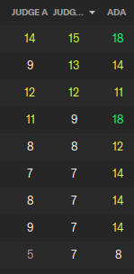
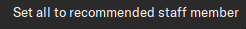
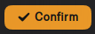
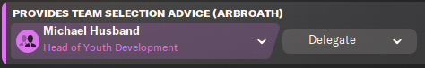
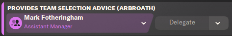

Locate the Staff tab on the side of the screen.
Now, click on the Staff tab.
Once you have clicked on the Staff tab, you should see the screenshot below on that page.
You have coaching, recruitment, and medical teams. If you have any spaces available, you will see a person icon with no colour in it. As you can see, I have a scout position available, so I'm going to place an advert for people to apply for it. To do that, I click on the person icon with the plus next to it and hover over place advert, which the scouting positions should appear, and then click on it. Once you've done that, you will need to simulate a week or two to receive some applicants.
Now that I have some applications, I will review their attributes to see who is best suited for the scouting position.
This is a close-up of their attributes. As this is a scouting position, sort the list by 'Judging Potential'. The reason I recommend focusing on potential is because that's how your squad improves — by signing young players with high potential and playing them.
Click on the 'Responsibilities' drop-down menu and select the 'Staff' option.
Now, scroll down until you see the screenshot below.
Click on 'Take control of all yourself', then select 'Set all to recommend staff member'.
Once you have done that, you will see that the staff member has changed for that responsibility.
The screenshot below shows what type of staff member should take up each of the responsibilities.
One important step to ensure the changes are saved is to click the 'Confirm' button in the bottom right corner.
Once clicked, you should see the 'Confirm' button become less visible. That is how you know when the changes have been saved.
If you see any responsibilities with the 'Delegate' button available, it means the staff member assigned to that responsibility isn't the best option. The reason for this happening is that you don't actually have that staff role hired. For example, in that screenshot, I recently changed my assistant manager, so it defaulted the 'Provides team selection advice' (Arbroath) responsibility to my Head of Youth Development.
Once I clicked 'Delegate', it changed to my assistant manager, and the 'Delegate' button became unavailable. To save the change, I clicked 'Confirm'.